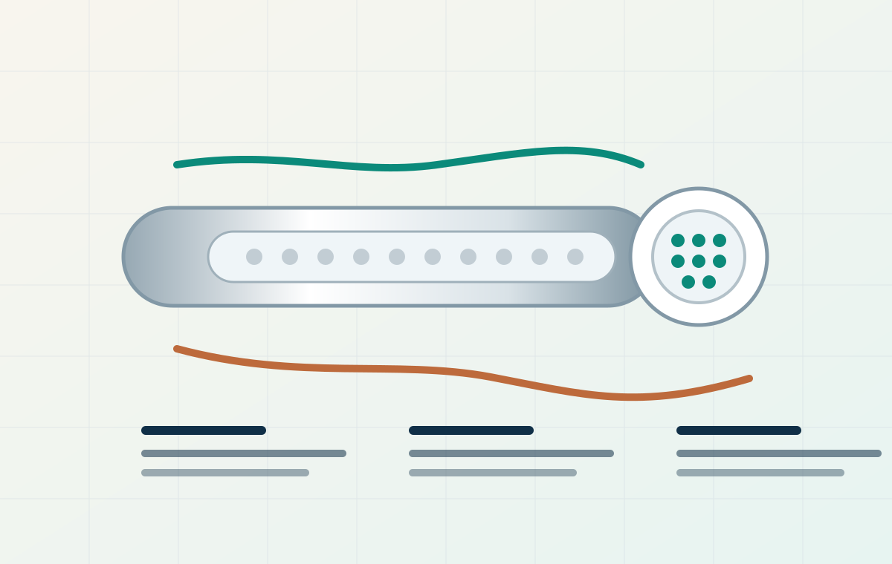

陶瓷管式膜元件
适合高悬浮物、高污染负荷和需要强清洗恢复的微滤/超滤分离场景。
Products
产品页按工程采购习惯组织：先看产品族，再看参数字段、适配场景和选型资料。真实型号与数据可在后续拿到样册后替换。
Product family
这样既能服务直接采购膜元件的客户，也能承接需要验证、中试或系统集成的工程项目。

适合高悬浮物、高污染负荷和需要强清洗恢复的微滤/超滤分离场景。
围绕密封、接口、流道、压降和维护便利性设计，用于新建系统或既有工艺改造。

用于水样验证、参数放大、现场中试和工程交付，帮助客户在投资前确认路线。
Specification fields
以下为选型和页面展示必备字段。未拿到正式检测数据前，以“典型字段/待确认”表达，避免硬编不存在的承诺。
| 类别 | 字段 | 当前展示口径 | 客户决策价值 |
|---|---|---|---|
| 膜材 | 材质与支撑体 | 陶瓷膜材质、支撑体结构、密封材质待样册确认 | 判断耐受边界和是否适合现有清洗制度 |
| 分离性能 | 孔径/截留范围 | 按目标水样匹配微滤或超滤级别，具体数值待型号确认 | 决定能否截留悬浮物、乳化油、菌体或胶体 |
| 运行性能 | 参考通量 | 需标注测试水样、温度、压力和运行周期 | 用于估算膜面积、设备规模和投资区间 |
| 耐受范围 | pH / 温度 | 区分长期运行边界与短时清洗边界 | 判断酸洗、碱洗、热水清洗和特殊工况可行性 |
| 结构 | 长度、外径、通道数 | 按元件系列和组件规格形成尺寸表 | 匹配膜壳、管路、泵和现场安装空间 |
| 维护 | 清洗方式 | 反洗、气水洗、酸洗、碱洗等方式待工况确认 | 估算维护频次、药耗和停机时间 |
说明：正式上线前建议把样册、检测报告、材质证明和典型工况测试数据整理为 PDF 下载资料。
Selection logic
产品中心把“能否处理、用哪种结构、需要多少膜面积、清洗如何做”作为核心问题，避免客户只看到一张孤立参数表。
Documents
这些资料能显著提高社媒流量转询盘后的销售效率。
型号、孔径、尺寸、通道数、组件形式和推荐运行边界。
按行业整理进水特点、验证流程和工艺组合建议。
通量、跨膜压差、截留率、清洗恢复率和运行曲线。
开停机、清洗、保养、更换、常见问题和备件清单。